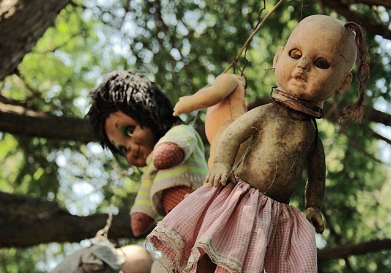

ISLA DE LAS MUÑECAS
Se trata de una isla artificial escondida entre una enorme red de canales en la ciudad de Xochimilco, cerca de Ciudad de México. Xochimilco tiene más de cien mil canales y muchas islas artificiales, conocidas como chinampas utilizadas originariamente para la agricultura. La isla de las Muñecas estaba habitada por un único hombre, Julian Santana. Según él, la isla fue lugar de un trágico incidente donde tres niñas murieron. El colgó tres muñecas en los árboles en honor a los espíritus de las tres niñas. Al principio, este hombre era conocido por las verduras que el cultivaba, pero más tarde, los locales comenzaron a intercambiar muñecas antiguas por esto. De esta forma la isla se fue llenando de muñecas colgadas y se fue haciendo popular. Y de repente, esta historia se truncó cuando en 2001 fue encontrado muerto en el mismo sitio que el encontró muertas a las niñas. Esta historia es muy triste que cuando uno la lea que tiene y por su vida a sido unas de las fabulosas y por cierto que sea es que l mayoria de personas que nunca prodrian ser verdad y tienen mucho temor en visitar la isla por que alli avitan las almas de las tres niñas y que cundo van a ver se sienten que si estuvieran las almas de las niñas alli como que nunca se han ido de alli por cierta razones que pusieron las tres muñecas por motivos de sus almas que descansan en paz. Anterior Siguiente |
 |
Se trata de una isla artificial escondida entre una enorme red de canales en la ciudad de Xochimilco, cerca de Ciudad de México. Xochimilco tiene más de cien mil canales y muchas islas artificiales, conocidas como chinampas utilizadas originariamente para la agricultura. La isla de las Muñecas estaba habitada por un único hombre, Julian Santana. Según él, la isla fue lugar de un trágico incidente donde tres niñas murieron. El colgó tres muñecas en los árboles en honor a los espíritus de las tres niñas. Al principio, este hombre era conocido por las verduras que el cultivaba, pero más tarde, los locales comenzaron a intercambiar muñecas antiguas por esto. De esta forma la isla se fue llenando de muñecas colgadas y se fue haciendo popular. Y de repente, esta historia se truncó cuando en 2001 fue encontrado muerto en el mismo sitio que el encontró muertas a las niñas.